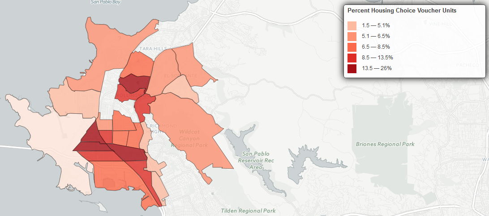
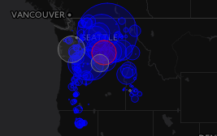
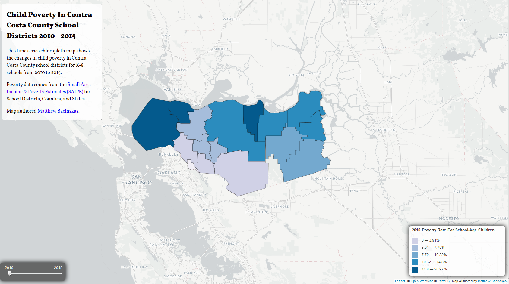
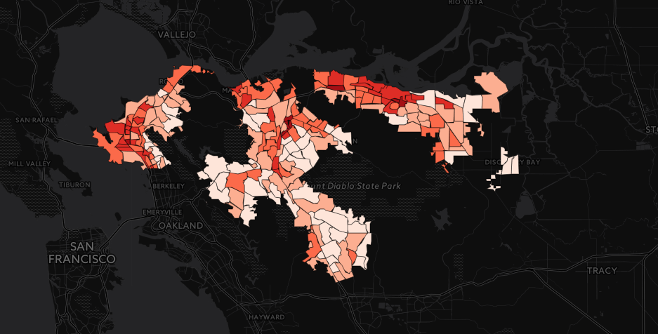
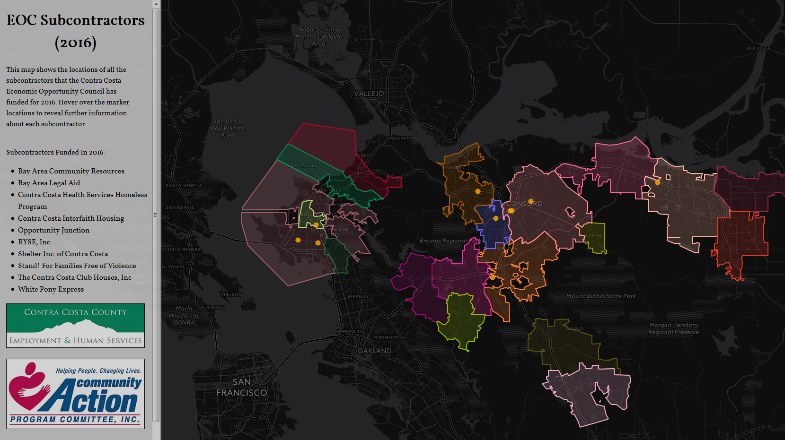
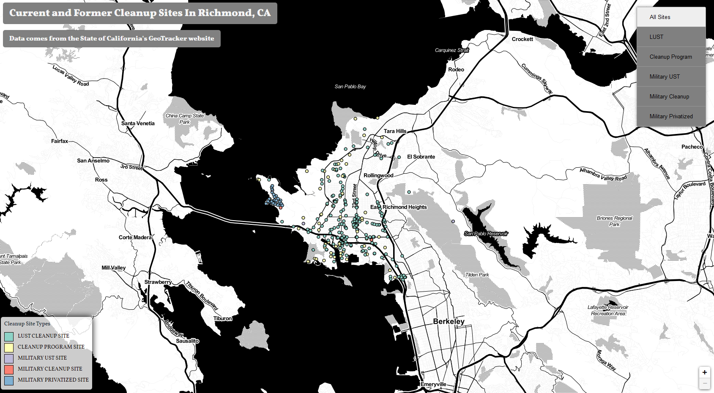
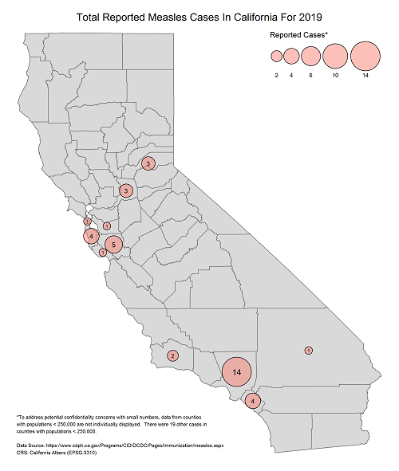
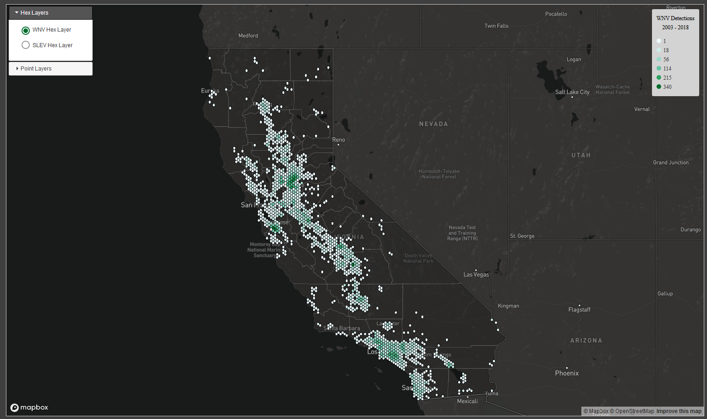

Matthew Bacinskas
Mapping Portfolio

This map shows areas of Oakland, CA within one-half mile of a bus stop. The impetus for this map was to see what gaps existed between Open Street Map and a potenitally more detailed data set like the one from the AC Transit Agency. QGIS along with the QuickOSM plugin, SpatialLite Database, and the buffer geoprocessing tool were used to create this map.

This map shows the percentage of renter occupied units in Richmond, California that are Housing Choice Voucher (HCV) units. HCV data was downloaded from the United States Department of Housing and Urban Development's eGIS website. Median household income data was downloaded from the United States Census Bureau's American Fact Finder website and gathered from the American Community Survey 2010-2014 5-year estimates. Median household income data, expressed in 2014 inflation adjusted dollars, were included to give a better idea about what kind of census tracts HCV units are in and can also serve as a possible guide as to how exclusionary a census tract may be. CARTO.js was used to create this web map.

This map shows the geographic distribution of electrical power generation plants in the United States that use Hydropwer, Nuclear, or Coal as fuel sources. Leaflet was used to create this multivariate map.
This hexbin map shows the density of breweries in North America and Hawaii. QGIS was used to run a point in polygon analysis to determine the densities of these brewery locations.
This map shows parcels of land that are now owned by the City of Richmond that were formerly owned by the Successor Agency to the Redevelopment Agency and their proximity to AC transit bus stop locations. The map was created using QGIS and CARTO, Leaflet was then used for a more controlled way of displaying the map. All the information for the parcels was obtained from Richmond's Long Range Property Management Plan document. Parcel polygon data was downloaded from the Contra Costa County Mapping Information Center. Bus stop location data was downloaded from the AC Transit Data Resource Center. Parcel Locations layer will dissolve as you zoom in and the bus stop locations will become visible. All bus stop locations on this map are within 400 meters (1/4 mile) of the parcels. Geoprocessing was done in QGIS (using Buffer and Clip tools) to gather all bus stop locations within 400m of parcels and the newly created bus stop layer was then uploaded to CARTO.

This map shows the poverty rate for children aged 5 -17 in Contra Costa County School Districts. CARTO.js was used to created the particular time series map.
This map shows what it takes for a particular family type to live in one of the nine Bay Area Counties. Economic data for the Bay area counties comes from the Basic Economic Security Tables Index. Map was created using CARTO.js

This map shows the percentage of extremely rent burdened (>50% monthly income going to rent) households in Contra Costa County census tracts for 2010 - 2014. CARTO.js and SimpleStatistics.js were used to create this map.

This map was created during my time on the Contra Costa Economic Opportunity Council as a means to identify how our subcontractors were distributed throughout the county and to determine if there may be areas of the county that had a disproportionate number of subcontractors.

This map was created using individual site cleanup data from the State of California's GeoTracker website. CARTO.js was used to create an interactive web map where users could choose a particular site type they were interested in knowing more information about.

This map shows Measles cases reported in California for 2019 using proportional symbols to represent cases in a particular county. R was used to create this map, along with the sf, tmap, and dplyr packages from the CRAN repository.

This map was created for my Master's project in the New Maps Plus graduate program at the University of Kentucky. My intention with this map and project was to further investigate occurences of West Nile Virus and St. Louis Encepahlitis in California from 2003 - 2018. An interactive web map was created along with a spatial analysis using PostgreSQL and PostGIS. Data cleanup was performed using Geopandas within Jupyter notebooks and the interactive map was created using MapboxGL and Assembly CSS .